> ITCH.IO NEWS
-
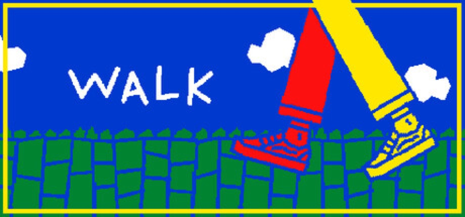
[ ITCH TO STEAM ] bilge's walk Graduates From itch.io Demo to Full Steam ReleaseSolo developer bilge launched walk on July 18 after building an audience through a free browser demo that still lives on itch.io. Inspired by the daily walks bilge takes with their partner, it turns mundane errands — grabbing a coffee, heading down the stairs — into 40+ clickable mini scenes, with art styled after the constraints of Flipnote Studio 3D. Steam's store description is two words: "it's about walking." ¥11 with a 20% launch discount. Source: itch.io demo · Steam
-
[ OPEN SOURCE ]
Blender Studio's DOGWALK Launches Free & Open Source
Blender Studio released DOGWALK — a short, free interactive story where you play a big dog exploring winter woods with a kid — on both itch.io and Steam. Built to showcase a Blender-to-Godot art pipeline, its full source bundle is CC BY 4.0 with MIT-licensed scripts. It topped the Steam charts within days and sits at 98% positive. Source: itch.io · Blender Studio
-
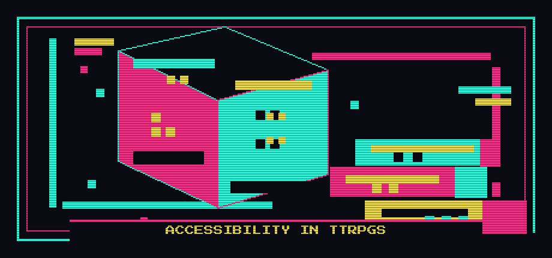
[ BUNDLE ] Indie Charity Bundle for Accessibility in TTRPGs — Live NowJob Class TTRPG is hosting a pay-what-you-want bundle of 45 tabletop titles — including the Fate Accessibility Toolkit and Dice & Glory Core Rulebook — to fund DOTS RPG Project's braille-faced dice and other accessibility initiatives for blind and visually impaired gamers. The drive has now cleared its target — $1,189 raised against a $1,000 goal from 187 contributors, and still open. Source: itch.io
-
 [ JAM ]
GMTK Game Jam 2026 Opens July 22
[ JAM ]
GMTK Game Jam 2026 Opens July 22
Mark Brown's Game Maker's Toolkit Jam — itch.io's biggest annual jam — opens submissions July 22 at 5pm through July 26 at 5pm. With three days to go before the theme reveal, the jam has passed 27,700 participants joined. Source: itch.io
-
 [ PLATFORM ]
itch.io Changelog: Sale Explorer, Patreon Integration & More
[ PLATFORM ]
itch.io Changelog: Sale Explorer, Patreon Integration & More
itch.io founder leafo posted a changelog on July 2, 2026 recapping quietly-shipped platform features: a new Sale Explorer for browsing discounts, a revamped bundle hosting system, a Jam Theme Editor, and Patreon integration that lets creators grant patrons access to their itch.io pages. Source: itch.io blog
> INDIE SCENE
-
[ SHOWCASE ]
IndieMania 3 Aired July 17 With 80+ Indie Games
The third IndieMania showcase streamed July 17 at 11am PT on IGN and Mike Odyssey's channels alongside a slate of co-streamers, running roughly 90 minutes. Hosted by Mike Odyssey with co-host Paul Gale, the event packed in 80+ indie games — world premieres from previously unannounced projects, first-look trailers, and debut gameplay footage — after last year's edition drew over a thousand applicants. Source: DayOne · Games Press
-
 [ SPOTLIGHT ]
Xbox Indie Selects — July 2026
[ SPOTLIGHT ]
Xbox Indie Selects — July 2026
The ID@Xbox team's five hand-picked indies for July: Mina the Hollower (Yacht Club Games, $19.99), Realm of Ink, Bellwright, Coffee Talk Tokyo, and NBA THE RUN — most with Xbox Play Anywhere support. Source: Xbox Wire
> INDIE GAME RELEASES — JULY 2026
-
 JUL 01 Cat Squeeze
JUL 01 Cat SqueezePuzzle game guiding a cat through pipes and mazes.
-

-

-
 JUL 09 Cat Mail Co.
JUL 09 Cat Mail Co.Cozy cat post-office sim by Maracas Studio — sort and deliver parcels by day, let the moon reveal hidden truths about packages at night. Steam
-

-

-
JUL 10 GERONIMO — Early Access
Dark Matter Studios' VR-only tactical CQB shooter enters Early Access — solo or up to 6-player co-op squads, deep weapon customization, and killhouse training built for Quest, Index, and Reverb G2. Steam
-
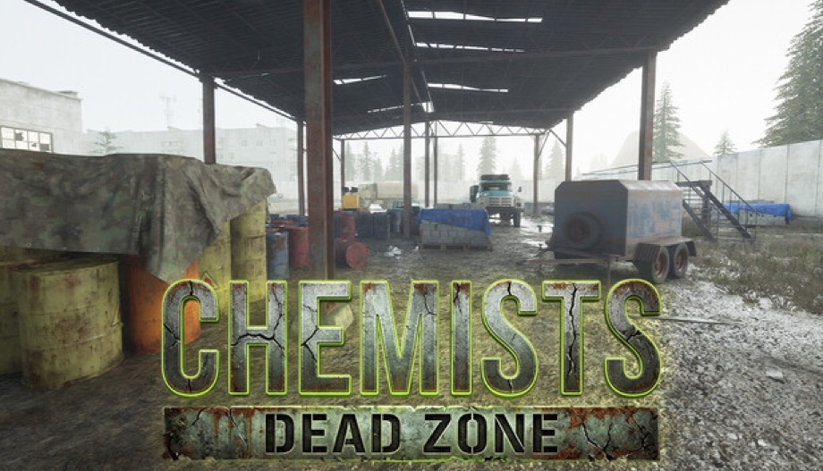
JUL 10 CHEMISTS: Dead Zone — Early AccessRPAX Gaming's post-apocalyptic open-world TPS/FPS-RPG hits Early Access — scavenge irradiated anomaly zones, craft and trade with rival factions, and manage hunger and radiation while fighting mutants. Steam
-
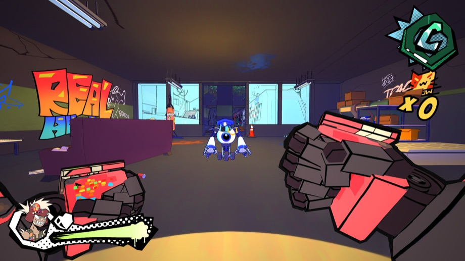
-
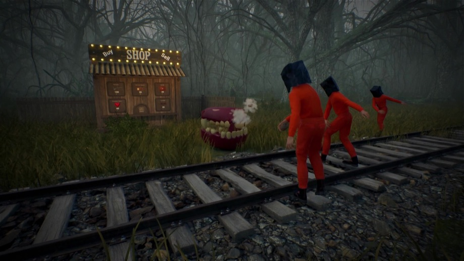
-
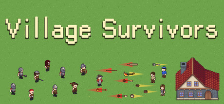
-
JUL 13 The Alters: Last Variable
11 bit studios' story expansion for The Alters — a ~20-hour campaign that follows the ending where Jan Scientist stays behind to unlock the planet's secrets, building an underground base and a crew of specialised alters. PC/PS5/Xbox Series; base game required. Steam · Gematsu
-
 JUL 13 Ascend to ZERO
JUL 13 Ascend to ZERORoguelike where mastering time itself is the key to survival.
-
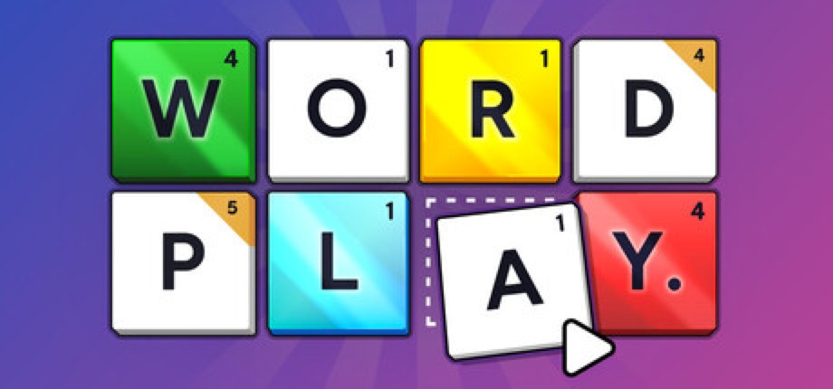
JUL 14 Word PlaySpelling roguelike deckbuilder from Mark Brown — the creator of YouTube's Game Maker's Toolkit and the GMTK Game Jam — where you bend the rules and rework your tiles as you play. Started as a Steam Next Fest demo. Steam · GMTK devlog
-
 JUL 14 D-topia — OUT NOW
JUL 14 D-topia — OUT NOWAnnapurna Interactive and Marumittu Games' puzzle-adventure launches today — you're a Facilitator keeping an AI-run utopia running via logic puzzles, slipping between the bright public world and a hidden "Block Side" to fix glitches, as your choices tip the AI toward joy or despair. PC/PS5/Xbox Series/Switch 1&2, $19.99. Steam · Gematsu
-
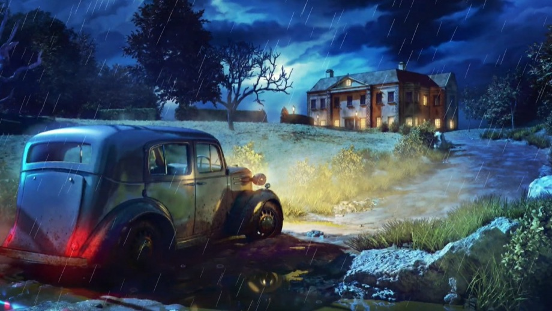
JUL 14 The Incident at Galley House — OUT NOWDetective mystery from William Rous and Evil Trout Inc. — a ground-up remake of the cult browser text adventure Type Help. Use a strange contraption that replays echoes of the past to unravel a grisly 1936 cold case, decades after locals found the bloody aftermath. Steam · Gamestic
-

-
 JUL 15 The Mound: Omen of Cthulhu
JUL 15 The Mound: Omen of Cthulhu4-player co-op cosmic horror from ACE Team (Zeno Clash) — conquistador-era expeditions where creeping madness makes allies look like monsters. PC/PS5/Xbox Series. Gematsu
-
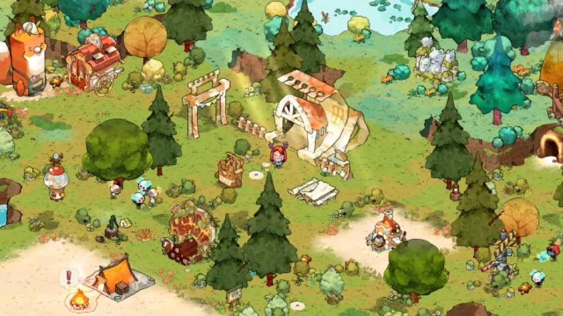
-
JUL 16 Heave Ho 2 — OUT NOW
Le Cartel Studio and Devolver Digital's flailing-arms party game returns — the 2-4 player hang-on-and-fling co-op chaos takes couch play online for the first time. The original neared a million sold; the sequel lands today on PC, Switch and Switch 2 for $9.99. Steam · Gematsu
-
 JUL 16 The Mermaid Mask — OUT NOW
JUL 16 The Mermaid Mask — OUT NOWMurder-mystery sequel to Tangle Tower (2019) by SFB Games — sleuths Detective Grimoire and Sally investigate the killing of the captain of the world's strangest submarine. Out today on PC/PS5/Switch/Switch 2.
-
 JUL 16 Moss: The Forgotten Relic — OUT NOW
JUL 16 Moss: The Forgotten Relic — OUT NOWPolyarc's storybook adventure unites Moss and Moss: Book II, enhanced for its non-VR PC debut and out today — PC/PS5/Xbox/Switch 1&2, Steam Deck verified. Steam
-
 JUL 16 Dead Weight — OUT NOW
JUL 16 Dead Weight — OUT NOWSteampunk tactical roguelite from Klukva Games — sail a flying pirate ship between floating islands, recruit a crew, and fight the Ancient Gods in turn-based battles on tiny battlefields. Over 120,000 wishlists. Steam · Noisy Pixel
-
 JUL 16 Funnel Runners — OUT NOW
JUL 16 Funnel Runners — OUT NOWFirst-person co-op survival game from Supernova Studios — trapped with up to 7 friends in a doomed city, scavenge parts and fix your van before an escalating tornado tears the map apart. Steam · Niche Gamer
-
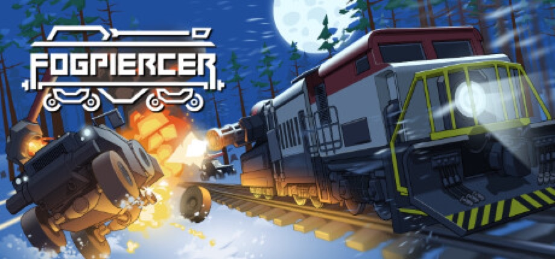
-
JUL 17 Desktop Explorer — OUT NOW
Your uncle leaves you his old PC as a living inheritance — and it still boots. Recurring Dream's 90s-flavoured digital mystery hides its missing-person case inside file explorers, chat logs and corrupted apps, and is co-funded by Innersloth's Outersloth and Mega Crit's Casey Yano. Carries content warnings for depression, suicide and self-harm. Steam · Games Press
-
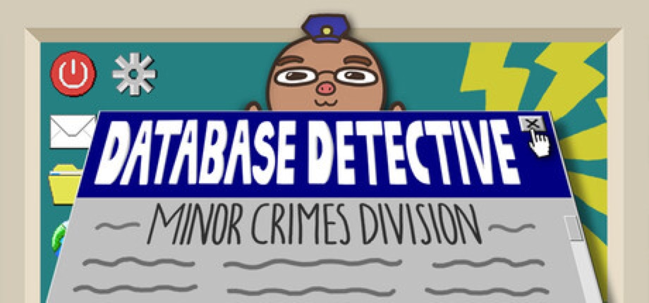
JUL 17 Database Detective: Minor Crimes Division — OUT NOWSolo dev Thomas Hsu's puzzle game has you crack cases in fictional Los Zorangeles by writing real SQL queries — littering, hotel checkout violations, and worse. Ships with a sub-20-page in-game textbook so beginners can start cold; 10 cases run roughly 8-10 hours. Steam · 80 Level
-
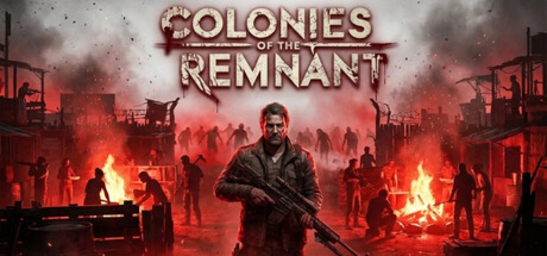
JUL 17 Colonies of The Remnant — Early AccessCat Soul Studios' post-apocalyptic colony sim hits Early Access — recruit survivors, assign roles, and raid or ally with rival colonies in first- or third-person combat while the undead press in. The studio targets 1.0 in roughly 5-9 months. Steam
-
 JUL 20 Raccoons to Riches
JUL 20 Raccoons to RichesRoguelike deckbuilder starring a money-obsessed raccoon.
-

-
 JUL 23 Gurei
JUL 23 GureiBoss-rush game where defeating enemies lets you steal their powers.
-
 JUL 23 Dinoblade
JUL 23 DinobladeAction RPG starring a Great Sword-wielding Spinosaurus, from a Sucker Punch senior animator — timing-focused combat against armed rival dinos. Steam
-
 JUL 30 Kusan: City of Wolves
JUL 30 Kusan: City of WolvesTop-down shooter with a Hotline Miami vibe.
-
 JUL 30 How Many Dudes?
JUL 30 How Many Dudes?Free-to-play roguelike dudebuilder from Butterscotch Shenanigans (Crashlands) — recruit 42 unique Dude types across game-breaking synergy runs; its demo got its start in the itch.io GMTK Game Jam. Steam · itch.io demo
-
 JUL 31 Corsair Cove
JUL 31 Corsair CovePirate-themed city builder turning a deserted island into a settlement.
Release list sources: Green Man Gaming — Indie Game Release Round-Up, July 2026, plus per-entry Steam / press links above. Game artwork: official Steam store assets, © their respective developers and publishers.
> ABOUT
CyberCycho is a curated digest of itch.io.